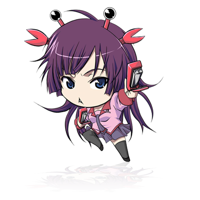
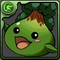
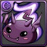
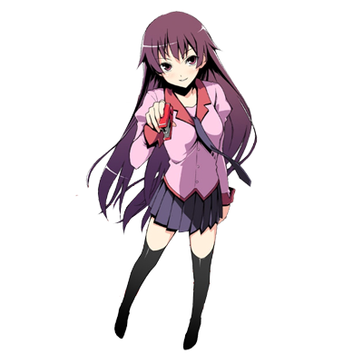

<!DOCTYPE html>
<html lang="ko">
<head>
    <title>redcamel-D3 Test</title>
    <meta name="keywords" content="bs5"/>
    <meta name="description" content="bs5 Test suite"/>
    <meta charset="utf-8"/>
    <meta http-equiv="Content-Type" content="text/html; charset=UTF-8"/>
    <meta name="format-detection" content="telephone=no"/>
    <meta name="apple-mobile-web-app-capable" content="yes"/>
    <meta name="apple-mobile-web-app-status-bar-style" content="black"/>
    <meta name="viewport"
          content="width=device-width,user-scalable=no,initial-scale=1.0,maximum-scale=1.0,minimum-scale=1.0,target-densitydpi=medium-dpi"/>
    <link rel="shortcut icon" href="favicon.ico" type="image/x-icon">
</head>
<body>
<a href="https://github.com/projectBS/bsJS">
    
</a>
<script src="../../../bsJS/bsjs.0.3.js"></script>


<script>
    // 2013.12.24 - 00:00
    // By Redcamel
    // 개발목적 : d3 플러그인 개발
    // 다음목표 : 충돌처리와 bs.sprite 연동 예제까지..
    bs.plugin('d3', 'last');
    bs(function(){
        bs.Css("body").S('margin', 0, 'overflow', 'hidden'), bs.Css("div").S('margin', 0, 'position', 'absolute'), // 바디 css
                bs.Css("input").S('position', 'absolute', 'z-index', 10000000000), // input css
                bs.Dom("<div></div>").S('<', 'body', '@id', 'stage', 'width', 1000, 'height', 500, 'background-color', '#333', 'overflow', 'hidden'); // stage DIV만들기
        //////////////////////////////////////////////////////////////////////////
        // bs.D3 튜토리얼
        //////////////////////////////////////////////////////////////////////////
        // 00 월드 생성 및 사이저지정 - d3로 생성된 오브젝트를 넣을 div를 하나 넣습니다.
        // overflow hidden 하셔야함.
        bs.WIN.sizer(function(w, h){bs.Dom("#stage").S('width', w, 'height', h)})
        // 1. 카메라모드지정
        // 잘알려진 2d베이스 게임 doom -_-;;;; dom이아니라 doom ㅋㅋㅋ;; 드립력작렬 ;;;;;;;;;;;;
        // 현재 모드는 doom 모드만 가능
        bs.D3('camera@doom'),
                bs.D3('camera@doom').S('camera').S(
                        'forward', 'w', 'backward', 's',
                        'left', 'a', 'right', 'd',
                        'panleft', 'q', 'panright', 'e',
                        'tiltup', 't', 'tiltdown', 'g',
                        'up', 'r', 'down', 'f'
                ),
            // 2. 재질생성
            // bs.D3m(사용할재질이름)
                bs.D3m('mat1').S('html', "mat1 재질"),
                bs.D3m('mat2').S('html', "<div>div도 가능하다</div>"),
                bs.D3m('mat3').S('html', ""),
                bs.D3m('mat4').S('html', "");
        // 3. 지오메트리 생성 (빌보드니 Plane만가능 -_-)
        // plane@ + 인스턴스명 으로 생성
        var len=bs.DETECT.device=='tablet' || bs.DETECT.device=='mobile' ? 5 : 30 // 모바일이나 태블릿환경일때 갯수 분기
        for(var i=0; i<len; i++){
            bs.D3('plane@aa'+i).S('<', '#stage', // d3객체의 부모가 지정되면 d3가 렌더링될 월드로 자동 지정됩니다.
                    'x', bs.rand(-1000, 1000), 'z', bs.rand(-1000, 1000),
                    'background-color', '#ffffff', 'width', 100, 'height', 100,
                    'material', 'mat1' // 재질 설정 d3의 material프로퍼티에 D3m으로 생성한 재질이름을 입력합니다.
            ),
                    bs.D3('plane@bb'+i).S('<', '#stage', 'x', bs.rand(-1000, 1000), 'z', bs.rand(-1000, 1000),
                            'width', 100, 'height', 100,
                            'material', 'mat2'// 재질 설정 d3의 material프로퍼티에 D3m으로 생성한 재질이름을 입력합니다.
                    ),
                    bs.D3('plane@cc'+i).S('<', '#stage', 'x', bs.rand(-1000, 1000), 'z', bs.rand(-1000, 1000),
                            'width', 100, 'height', 100,
                            'material', 'mat3' // 재질 설정 d3의 material프로퍼티에 D3m으로 생성한 재질이름을 입력합니다.
                    ),
                    bs.D3('plane@dd'+i).S('<', '#stage', 'x', bs.rand(-1000, 1000), 'z', bs.rand(-1000, 1000),
                            'width', 100, 'height', 100,
                            'material', 'mat4'
                            // 재질 설정 d3의 material프로퍼티에 D3m으로 생성한 재질이름을 입력합니다.
                    )
        }
        // 4. 재질변경
        // plane 오브젝트의 재질을 단독변경
//        for (var i = 0; i < len; i++) bs.D3('plane@aa' + i).S('material', 'mat2')
        // 재질 자체를 변경하면 해당재질을 사용하고 있는 모든 plane의 재질이 변경!
        // 기타 확인용 호스트
        ////////////////////////////////////////////////////////////////////////////////////////////////////////////////
        setCameraReset()
        setDebuger();
        setCameraFlow()
        setTitle()
        setMaterialControll()
        function setCameraReset(){
            bs.Dom("<input type='button' value='카메라리셋'>").S('<', '#stage', 'left', 10, 'top', 390, 'width', 110,
                    'down', function($e){
                        var camera=bs.D3('camera@doom').S('camera');
                        camera.x=camera.y=camera.z=0, camera.tilt=camera.pan=0.01, camera.faclip=2500, camera.speed=10
                    }
            )
        }

        function setMaterialControll(){
            var htmlStrs=[
                "",
                "",
                "",
                "",
                "",
                "",
                "",
                "텍스트나 div수정도된닷!"
            ]
            bs.Dom("<input type='button' value='mat1 재질수정'>").S('<', '#stage', 'left', 10, 'top', 330, 'width', 110,
                    'down', function($e){
                        bs.D3m('mat1').S('html', htmlStrs[Math.floor(bs.randf(0, htmlStrs.length))])
                    }
            )
            bs.Dom("<input type='button' value='mat2 재질수정'>").S('<', '#stage', 'left', 120, 'top', 330, 'width', 110,
                    'down', function($e){
                        bs.D3m('mat2').S('html', htmlStrs[Math.floor(bs.randf(0, htmlStrs.length))])
                    }
            )
            bs.Dom("<input type='button' value='mat3 재질수정'>").S('<', '#stage', 'left', 10, 'top', 360, 'width', 110,
                    'down', function($e){
                        bs.D3m('mat3').S('html', htmlStrs[Math.floor(bs.randf(0, htmlStrs.length))])
                    }
            )
            bs.Dom("<input type='button' value='mat4 재질수정'>").S('<', '#stage', 'left', 120, 'top', 360, 'width', 110,
                    'down', function($e){
                        bs.D3m('mat4').S('html', htmlStrs[Math.floor(bs.randf(0, htmlStrs.length))])
                    }
            )
        }

        function setTitle(){
            bs.Dom('<div></div>').S('<', 'body', 'id', 'title', 'html', 'bs.D3 Demo', 'left', 10, 'font-size', 30, 'color', '#fff', 'top', 20, 'z-index', 10000000000)
            var exStrs=['W : forward / S : backward', 'A : left / D : right', 'R : up / F : down', 'Q : panLeft / E : panRight', 'T : tiltUp / G : tiltDown']
            for(var i=0; i<6; i++) bs.Dom('<div></div>').S('<', 'body', 'id', 'title'+i, 'html', exStrs[i], 'font-size', 11, 'color', '#fff', 'top', 60+15*i, 'left', 10, 'z-index', 10000000000)
        }

        function setDebuger(){
            bs.Dom('<div></div>').S('<', 'body', '@id', 'debuger', 'left', 10, 'top', 150, 'font-size', 11, 'background-color', '#ffffff', 'width', 190, 'padding', 10, 'z-index', 10000000000, 'this')
            // 디버거 세팅
            var debuger={
                ANI:function($time){
                    var camera=bs.D3('camera@doom').S('camera')
                    var str="bs.D3('camera@doom').S('camera')"
                    str+='<br><br>x :'+camera.x
                    str+='<br>y :'+camera.y
                    str+='<br>z :'+camera.z
                    str+='<br>pan :'+camera.pan
                    str+='<br>tilt :'+camera.tilt
                    str+='<br>speed :'+camera.speed
                    str+='<br>farclip :'+camera.farclip
                    bs.Dom('#debuger').S('html', str)
                }
            }
            bs.ANI.ani(debuger)
        };
        function setCameraFlow(){
            var camera=bs.D3('camera@doom').S('camera')
            var cameraFlow={
                pause:false,
                ANI:function($time){
                    var sin=Math.sin($time/2000) , cos=Math.cos($time/2000)
                    camera.x=sin*500
                    camera.z=cos*500
                    camera.y=cos*150-150
                    camera.tilt=sin/10
                    camera.pan=sin
                    return this.pause
                }
            }
            bs.ANI.ani(cameraFlow)
            var msg1='자동플레이에서는 카메라 조작이 되지않습니다.'
            var msg2='키보드를 통해서 카메라 조작을 할 수있습니다.'
            bs.Dom('<div id="toggle"></div>').S('<', 'body',
                    'html', 'pause '+msg1,
                    'position', 'absolute', 'top', 300, 'left', 10, 'width', 350, 'height', 20, 'border-radius', 15,
                    'background', '#fdd', 'line-height', 20, 'text-align', 'center', 'font-weight', 'bold', 'cursor', 'pointer', 'font-size', 11, 'z-index', 10000000000,
                    'down', function($e){
                        cameraFlow.pause= !cameraFlow.pause
                        if(!cameraFlow.pause) bs.ANI.ani(cameraFlow)
                        var isPause=cameraFlow.pause
                        bs.Dom("#toggle").S('html', isPause ? 'resume '+msg2 : 'pause '+msg1, 'background', isPause ? '#ffd' : '#fdd');
                    }
            )
        }
    })
</script>
</body>
</html>
